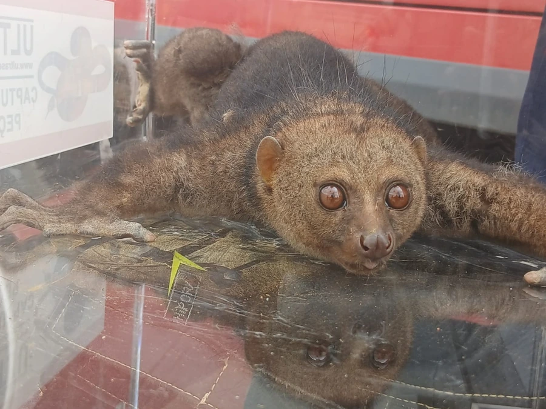

哺乳动物 · 动物界
树熊猴 Perodicticus potto

西非与中非雨林中行动缓慢的夜行灵长类，尾极短，第二指退化，颈后特化的颈椎棘突可抵住天敌喉咙，以果实和树胶为食。
- 分类
- 门脊索动物门纲哺乳纲目灵长目科懒猴科属树熊猴属
- 栖息环境
- 低地热带雨林与河岸林，多在树冠中下层活动
- 地理分布
- 西非至中非的热带雨林，包括几内亚比绍、加纳、尼日利亚、喀麦隆、刚果与乌干达
- 保护级别
- IUCN 无危（LC）
物种志
树熊猴体长 30–39 cm，尾极短，仅 3–10 cm，体重约 0.8–1.6 kg。全身覆红褐至灰褐色绒毛，眼睛大而圆，第二指退化，颈后有几枚特化的颈椎棘突，可顶住天敌的喉咙，是其独特的防御结构。
它们分布于西非和中非的热带雨林，从几内亚比绍到肯尼亚西部、乌干达和刚果盆地都有记录，生活在树冠中下层，夜间单独活动。行动缓慢谨慎，靠四肢紧握枝条移动，主食果实、树胶、花蜜和昆虫，也吃鸟卵。每胎一仔，幼仔常攀附在母亲腹部；寿命约 20 年。
形态与习性
- 食性果实、树胶、花蜜、昆虫与鸟卵
- 体长30–39 cm，尾仅 3–10 cm
- 体重约 0.8–1.6 kg
- 寿命约 20 年
- 繁殖每胎一仔，幼仔攀附于母亲腹部
- 活动节律夜行性，单独活动，行动缓慢谨慎
趣味知识
- 树熊猴颈后的颈椎棘突穿出皮肤形成小突起，遇袭时低头用其顶压对手。
- 它的第二指明显退化，手掌主要靠拇指与其他三指抓握枝条。
- 树熊猴会舔食树胶，并用齿梳梳理毛发，是原猴类中较典型的习性。